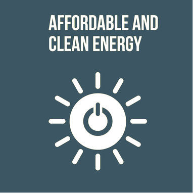

Kategori lomba dan tahapan acara
Startup yang dilombakan harus sesuai dengan tema “Realizing the post-pandemic economic growth of Indonesia” dan salah satu dari 10 bidang kategori berikut.
Bidang kategori
-

Zero Hunger
Startup yang bergerak dalam mencapai tujuan Indonesia menuntaskan permasalahan kelaparan, seperti inovasi pangan dengan penciptaan inovasi untuk perbaikan nutrisi.
-

Good Health and Well-Being
Isu kesehatan merupakan hal yang menjadi perhatian utama sehingga dibutuhkan inovasi untuk membuat startup agar kesejahteraan masyarakat mampu meningkat.
-

Quality Education
Teknologi dalam menunjang pendidikan sangat dibutuhkan karena modernisasi pendidikan harus selalu dilakukan inovasi.
-

Clean Water and Sanitation
Startup yang bergerak untuk merevitalisasi air dan sanitasi layak dengan inovasi teknologi yang bisa membantu masyarakat.
-

Affordable and Clean Energy
Listrik dan energi terbarukan merupakan hal yang harus dikembangkan demi terciptanya aksesibilitas yang mudah bagi penduduk dan aspek lainnya.
-

Decent Work and Economic Growth
Startup yang bergerak dalam bidang investasi serta pertumbuhan ekonomi untuk memaksimalkan kapabilitas perekonomian suatu negara.
-

Industry, Innovation, and Infrastructure
Industri yang berkelanjutan ditunjang oleh sistem infrastruktur yang perlu diinovasikan sehingga startup ini bergerak pada bidang infrastruktur modern.
-

Sustainable Cities and Communities
Startup yang difungsikan untuk membuat kota menjadi inklusif, aman, kuat, dan berkelanjutan.
-

Responsible Consumption and Production
Startup yang bergerak dalam memastikan pola konsumsi dan produksi berkelanjutan.
-

Life Below Water
Startup yang bergerak dalam perburuan dan pencemaran terhadap ekosistem laut, maka dalam pembangunan berkelanjutan kehidupan laut akan dilindungi.
Timeline & ketentuan
Jadwal mengikuti pengumuman panitia. Ketentuan lengkap, format pitch deck, dan penilaian tersedia di guidebook (PDF, 14 MB).
-
Batch 1: 14–27 Agustus 2022
Batch 2: 28 Agustus – 7 September 2022Tahap 1: Pendaftaran dan pengiriman pitch deck (seleksi tahap I)
Pendaftaran dilakukan secara daring melalui Google Formulir, lalu tim mengirimkan pitch deck sebagai seleksi tahap I.
Kriteria peserta
- Satu tim terdiri dari 3 sampai 5 orang berstatus mahasiswa aktif (diploma dan/atau sarjana) yang dibuktikan melalui Kartu Tanda Mahasiswa (KTM).
- Peserta dalam 1 tim boleh berasal dari perguruan tinggi yang berbeda.
- Setiap tim hanya boleh mengirimkan 1 pitch deck.
- Anggota dan ketua tim yang tertera pada formulir pendaftaran tidak dapat digantikan oleh orang lain dengan alasan apa pun.
- Pitch deck yang dilombakan adalah karya orisinal dan bukan bentuk plagiarisme.
- Startup yang dilombakan dapat berupa:
- Startup yang baru merintis atau sudah berjalan maksimal pada tahap seed funding (pre-seed dan seed funding / pre-MVP).
- Persyaratan tersebut dibuktikan melalui tautan media sosial, website, aplikasi mobile, atau prototipe startup.
- Startup yang dilombakan sesuai dengan tema dan salah satu subtema yang ditentukan panitia.
- Peserta wajib mengikuti seluruh rangkaian kegiatan serta ketentuan dan peraturan R’nB Startup Competition 2022 apabila lolos pada setiap tahap seleksi.
- Bila terdapat pelanggaran pada poin-poin di atas, panitia dan juri berhak memberikan sanksi tegas kepada peserta.
- Keputusan juri bersifat mutlak dan tidak dapat diganggu gugat.
Mekanisme pendaftaran & pembayaran
- Klik Daftar sekarang di website ini. Anda akan diarahkan ke Google Formulir.
- Isi semua pertanyaan dengan data yang lengkap, benar, dan dapat dipertanggungjawabkan.
- Kumpulkan berkas pendaftaran:
- Pitch deck (.pdf), kreatif dan inovatif sesuai ketentuan.
- Scan KTM (.pdf) ketua dan semua anggota tim, disatukan dalam 1 file.
- Twibbon dan follow Instagram: setiap anggota mengikuti Instagram dan memposting twibbon di akun pribadi, lalu bukti follow dan postingan seluruh anggota dijadikan 1 file pdf. Template twibbon dan caption: bit.ly/twibbonrnbc2022.
- Bukti pembayaran.
Biaya pendaftaran
- Gelombang 1
- Rp 50.000 (14–27 Agustus 2022)
- Gelombang 2
- Rp 75.000 (28 Agustus – 7 September 2022)
Rekening pembayaran
- BRI
- 5312-01-017539-53-5 a.n. Tri Puji Astuti
- GoPay & OVO
- 0812 2947 0673 a.n. Farah Alifia Putri
Konfirmasi
Setelah mendaftar dan membayar, kirim screenshot Google Formulir dan bukti pembayaran dengan format Nama Start-up_Nama Ketua_KonfirmasiPendaftaranRNBC2022 ke salah satu narahubung:
- Fadia: +62 813 2985 1807
- Mira: +62 851 5629 5914
-
15 Agustus 2022
Tahap 2: Pengumuman peserta bootcamp
Detail tahap ini diumumkan langsung kepada peserta melalui narahubung dan Instagram @rnb_competition.
-
17–18 September 2022
Tahap 3: Bootcamp
- Peserta bootcamp adalah 20 tim yang lolos seleksi pitch deck. Tim yang lolos melakukan konfirmasi dengan format Nama Startup_Nama Ketua Tim_Asal Peserta ke Contact Person (Humas).
- Tim yang lolos wajib mengikuti seluruh rangkaian bootcamp pada 17–18 September 2022. Platform yang digunakan meliputi Zoom, grup WhatsApp, dan Google Classroom.
- Peserta wajib mematuhi tata tertib selama bootcamp berlangsung.
- Peserta dibagi menjadi beberapa kelas, dan setiap kelas mendapatkan 1 mentor.
- Bootcamp diselenggarakan secara daring melalui video conference.
- Bootcamp berisi penyampaian materi wajib dan sesi mentoring. Materi: membuat pitch deck (penajaman market size), market validation (riset, solusi, dan strategi market), proyeksi finansial, serta fundraising dan pitching.
-
19–25 September 2022
Tahap 4: Challenge
- Setelah bootcamp, tahap Challenge berupa pengumpulan ulang pitch deck yang sudah diperbaiki sesuai arahan mentor dan pembuatan video pitching.
- Batas akhir pengumpulan perbaikan pitch deck dan video pitching: 25 September 2022 pukul 23.59 WIB, melalui Google Form/Google Classroom.
- Tim yang terlambat mengumpulkan Challenge dinyatakan gugur.
Ketentuan video pitching
- Durasi maksimal 5 menit, format landscape, resolusi minimal HD (1280 × 720), ukuran file maksimal 1000 MB.
- Berisi penjelasan pitch deck yang jelas, runtut, kreatif, dan menarik, dengan bagian pemaparan langsung oleh peserta.
- Pencahayaan ruangan terang tanpa backlight. Bahasa Indonesia atau Inggris.
- Urutan: template #1 (2–3 detik), logo dan nama startup pada template #2, penjelasan 10 komponen pitch deck, lalu template #1 (2–3 detik). Template tersedia di guidebook.
-
24 September 2022
Tahap 5: Pengumuman lolos tahap 2
Detail tahap ini diumumkan langsung kepada peserta melalui narahubung dan Instagram @rnb_competition.
-
1 Oktober 2022
Tahap 6: Pengumuman final day
Detail tahap ini diumumkan langsung kepada peserta melalui narahubung dan Instagram @rnb_competition.
-
2 Oktober 2022
Tahap 7: Technical meeting final day
Detail tahap ini diumumkan langsung kepada peserta melalui narahubung dan Instagram @rnb_competition.
-
9 Oktober 2022
Tahap 8: Final day
- Finalis adalah 5 tim terbaik berdasarkan akumulasi penilaian bootcamp dan seleksi pitch deck. Tim yang lolos melakukan konfirmasi dengan format Nama Startup_Nama Ketua Tim_Asal Peserta ke Contact Person (Humas) dan bergabung di grup WhatsApp final day.
- Final dilaksanakan secara luring pada 9 Oktober 2022. Waktu dan tempat diumumkan saat technical meeting.
- Setiap tim presentasi selama 30 menit: 10 menit presentasi dan 20 menit tanya jawab.
- Sambil menunggu giliran, tim menjaga booth pameran masing-masing yang disediakan panitia.
-
9 Oktober 2022
Tahap 9: Awarding
Juara 1, 2, dan 3 mendapatkan uang pembinaan, sertifikat, dan trofi. Juara ditentukan dari akumulasi nilai presentasi final day.